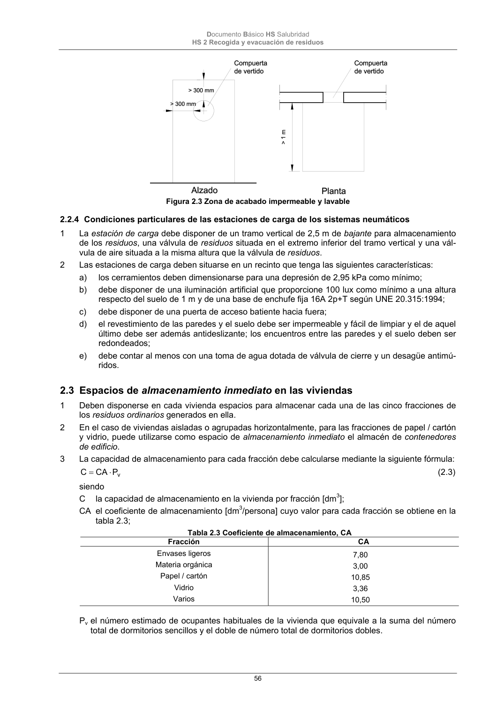

DB-HS Salubridad · edición 2022-06-14 · capa oficial
Documento DB-HS-oficial · SHA-256 del PDF 68df3caacc95f71aee2ec1ba7b2c65ae66155c21e3a8785521b8fdd4fd640d3b
Copia fiel del PDF fuente · Fuente oficial
Ficha de la disposición en la fuente oficial
Formatos: JSON del segmento · Markdown
2.2.4 Condiciones particulares de las estaciones de carga de los sistemas neumáticos 1 La estación de carga debe disponer de un tramo vertical de 2,5 m de bajante para almacenamiento de los residuos, una válvula de residuos situada en el extremo inferior del tramo vertical y una vál- vula de aire situada a la misma altura que la válvula de residuos. 2 Las estaciones de carga deben situarse en un recinto que tenga las siguientes características: a) los cerramientos deben dimensionarse para una depresión de 2,95 kPa como mínimo; b) debe disponer de una iluminación artificial que proporcione 100 lux como mínimo a una altura respecto del suelo de 1 m y de una base de enchufe fija 16A 2p+T según UNE 20.315:1994; c) debe disponer de una puerta de acceso batiente hacia fuera; d) el revestimiento de las paredes y el suelo debe ser impermeable y fácil de limpiar y el de aquel último debe ser además antideslizante; los encuentros entre las paredes y el suelo deben ser redondeados; e) debe contar al menos con una toma de agua dotada de válvula de cierre y un desagüe antimú- ridos.
